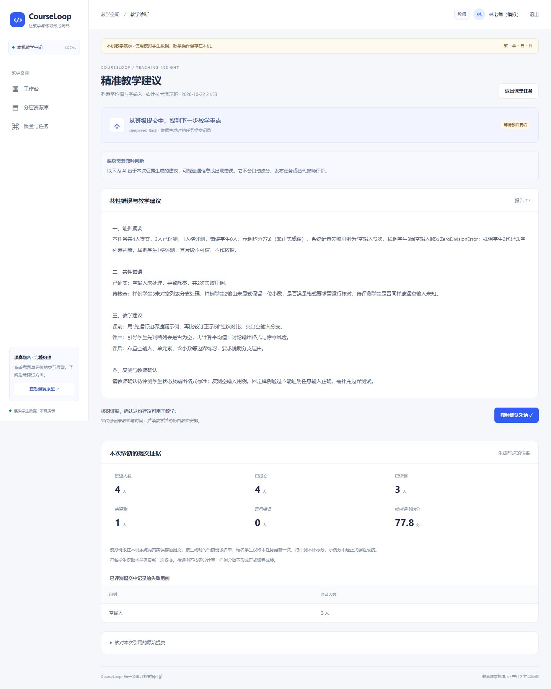

LOCAL TEACHING · 使用说明
从交互原型，
进入本机真实教学演示。
使用独立账号，体验资源、教学任务和学生提交；由本机后端调用 DeepSeek 官方 API，或使用本地 Ollama，生成教师诊断建议。
这个页面提供说明和入口。真实登录、数据保存与 AI 请求由你自己电脑上的 CourseLoop 服务完成。GitHub Pages 不托管这些后台功能，也不保存或提供模型密钥。
先启动，再打开
- 从源码仓库获取项目，在安装 Python 的电脑上运行
启动本机教学.cmd。首次启动需要联网安装依赖。 - 选择 DeepSeek 时，在本机服务中配置自己的 API 密钥并保持联网；选择 Ollama 时，启动本地服务并安装对应模型。模型连接失败时，教学记录仍可保存，诊断页面会显示失败原因。
- 查看启动窗口提示的运行目录中的
demo-accounts.txt获取独立的演示账号（默认目录为.runtime）。账号文件不随网站发布。 - 打开下方入口，依次登录学生、教师和管理员。切换账号前先退出登录。
该链接指向正在浏览此页面的这台电脑。未启动本机服务时无法打开；其他访客不会因此连接到作者的电脑。
教师 AI 诊断怎么体验
- 管理员进入模型配置，按所用服务填写地址、模型和密钥，保存后先执行连接测试。Ollama 本地服务通常无需密钥。DeepSeek 官方地址为
https://api.deepseek.com/v1，模型名为deepseek-flash。 - 学生在课堂任务中提交已审核示例，或编辑代码并保存为待评测。
- 教师打开任务，查看真实保存的提交情况，再生成“共性错误与教学建议”。
- 核对报告中的证据、模型与生成时间，由教师决定是否采纳。AI 不会自动发布任务或改分。
本次接入按 2026 年 10 月 22 日的官方 API 文档配置：deepseek-flash 当前由 DeepSeek-V4.1-Flash-1017 提供服务。模型别名后续可能更新。
选择 DeepSeek 时，本机后端会将生成报告所需的诊断材料发送至 DeepSeek；API 密钥只供本机后端使用。选择 Ollama 时，请求发送至配置的本地模型服务。
DeepSeek 真实调用报告截图

deepseek-flash 真实生成报告。截图基于模拟班级提交；报告是待教师复核的 AI 草稿，仅展示功能，不代表教学效果验证。此在线页面不会调用模型。演示边界
- 班级、学生和课程材料为明确标注的样例。系统中的提交、学习记录和报告由本机数据库保存。
- 当前只真实运行服务器固定的已审核代码。学生编辑后的代码保存为待评测，不在宿主机执行。
- 本机教学服务只开放给这台电脑；DeepSeek 是由该服务调用的云端模型。校内多人使用前，仍需部署、权限、隔离判题、备份和负载验收。
- 赛、评和学生聊天答疑按扩展计划继续建设；线上交互原型中的预设 AI 回复仍是演示。